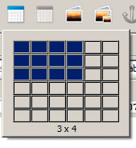
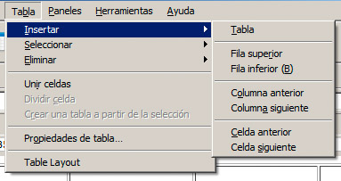
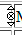
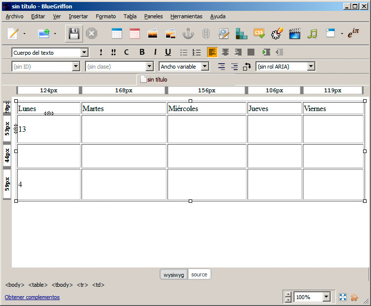
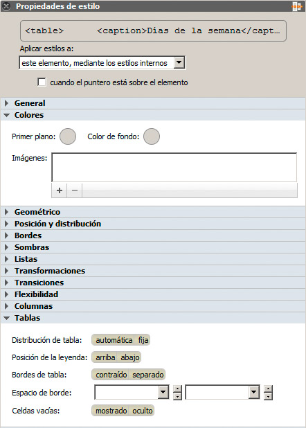
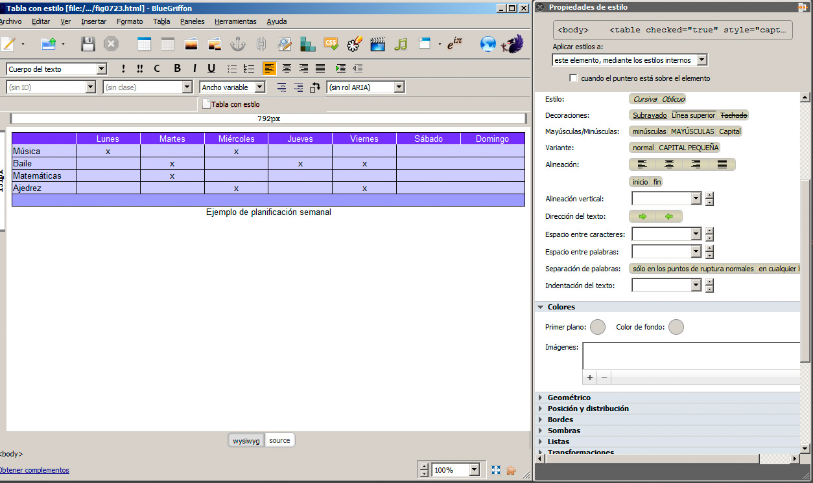
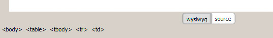

Crear una tabla
Para crear una tabla, haremos clic en el botón de la figura y seleccionaremos una dimensión aproximada para la tabla.

La gestión de la tabla se hace desde el menú Tabla o haciendo clic con el botón derecho del ratón sobre ella.

Añadir o eliminar filas y columnas
Para añadir o eliminar filas y columnas, colocaremos el puntero del ratón en alguna celda y a continuación seleccionaremos alguna de las opciones del menú Tabla referidas a Insertar o Eliminar. En cada opción dispondremos de todas las posibilidades.
También es posible realizar algunas operaciones directamente sobre la tabla, como eliminar celdas haciendo clic en los pequeños círculos con un aspa en su interior que aparecen sobre cada celda. Para insertar una celda, fila o columna podemos hacer clic en las dos pequeñas flechas que rodean a cada círculo con aspa, como se recoge en la figura.

Rellenar las celdas
Cuando la tabla tiene las dimensiones deseadas, introduciremos el texto o los elementos multimedia deseados, tratando cada celda como si fuese una página independiente. Si pulsamos Intro la celda se irá abriendo para añadir más espacio.
Para pasar a otra celda, podemos hacer clic sobre ella con el ratón, mientras que, si queremos pasar a la celda siguiente, podemos pulsar la tecla Tab (o Mayús-Tab para ir a la anterior). Esta es la forma más ágil de desplazarse entre celdas.
Nota
Si estamos al final de la tabla y pulsamos la tecla Tab, se creará una nueva fila para que continuemos escribiendo.
Unir y dividir celdas
Las opciones de rowspan y colspan también se pueden aplicar automáticamente desde el editor, con la opción Unir celdas del menú Tabla (previamente debemos seleccionar las celdas a unir).
Si hemos unido alguna celda y las queremos separar de nuevo, colocaremos el cursor en la celda y seleccionaremos la opción Tabla>Dividir celda.
Modificar las dimensiones de la tabla
Hay varios métodos para modificar las dimensiones de las celdas. La forma más inmediata es colocar el puntero del ratón en la división de dos filas que aparece en el lateral izquierdo o en la división de dos columnas sobre la página web. En ese punto arrastraremos el puntero mientras mantenemos pulsado el botón del ratón. La fila entera o la columna se redimensionará. En la figura hemos realizado algunos cambios con este método:

Propiedades de tabla
Aún queda un último conjunto de opciones destinadas a modificar la apariencia de nuestra tabla. Al seleccionar la opción Tabla>Propiedades de tabla se despliega el cuadro de diálogo de la figura:

Desde la pestaña Tabla podemos aplicar cambios a la estructura de la tabla, a sus dimensiones e incuso definir el borde de la misma.
En la pestaña Celda actuaremos sobre las celdas que estuviesen seleccionadas o sobre la fila o columna completa. De nuevo podemos especificar la dimensión, la alineación del contenido e incluso el color de fondo.
Estilos aplicados a las tablas
Una vez más el panel Propiedades de estilo nos permite modificar el aspecto de cualquier elemento que tengamos seleccionado, tanto si es la tabla completa, como un elemento interior.
En el grupo Tablas, recogido en la figura, encontraremos algunas opciones exclusivas de las tablas, entre ellas:
- Colocar el nombre de la tabla arriba o abajo (Posición de la leyenda o la propiedad caption-side)
- Tipo de borde: si será contraido (le aporta un aspecto más actual o separado (cambiando el valor Bordes de la tabla o la propiedad border-collapse).
La figura muestra un ejemplo de tabla a la que le hemos aplicado diferentes estilos.

Como siempre, para aplicar estilos con BlueGriffon resulta fundamental el uso del selector de etiquetas de la barra inferior. Con él podremos seleccionar un elemento concreto y así aplicarle estilo. La figura muestra el momento en el que estamos dentro de una celda. Podemos seleccionar la celda, pero también cualquiera de los elementos que le anteceden, como la fila, la tabla, etc.
